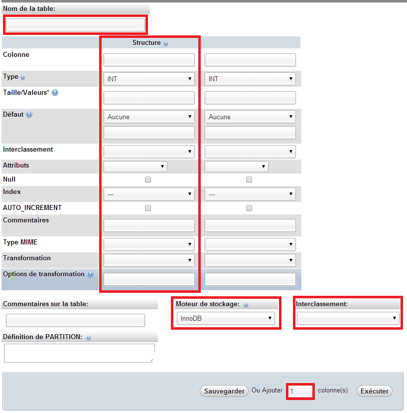
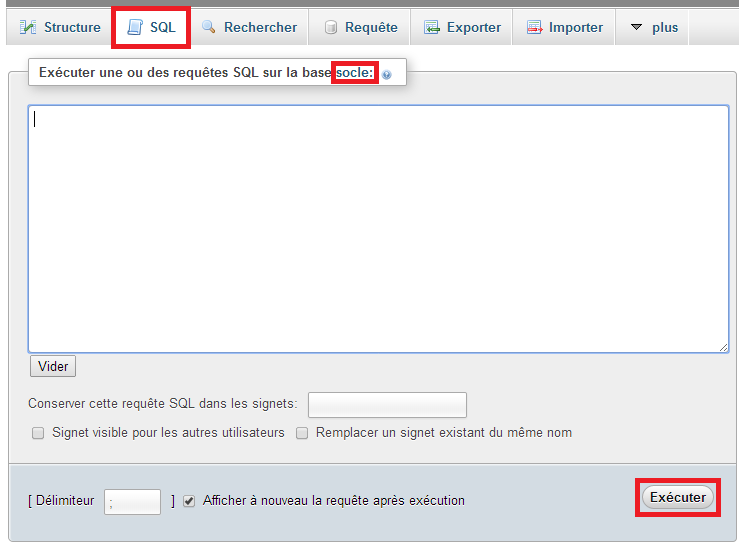

Description
phpMyAdmin (PMA) est une application Web de gestion pour les systèmes de gestion de base de données MySQL réalisée en PHP et distribuée sous licence GNU GPL.
Crée une Base de données avec phpMyAdmin
- Sélectionner l'onglet Base de données
- Insérer le nom de votre BDD dans le champs de saisie
- Créer

Sécurité
Il est recommandé de crée un utilisateur par BDD.
- Sélectionner l'onglet Privilèges
- Cliquez sur le lien Ajouter un utilisateur
- Saisir le Nom d'utilisateur
- Saisir le client* "Local"
- Saisir un Mot de passe
- Sélectionner "Crée une base portant ..."
Crée une Table avec phpMyAdmin
- Sélectionner votre BDD
- Cliquez sur Nouvelle table ou
- Saisir le nom de la table
- Saisir le nombre de colonne
- Exécuter
Création de table -suite-
- Saisir le nom de la table
- Saisir les données pour une colonne
- Sélectionner le Moteur de stockage
- Sélection l'interclassement
- Si besoin rajouter des colonnes
- Exécuter
Image slide suivant
Création de table -suite-
Faire des requètes SQL
Pour faire des requètes SQL, Sélectionner votre BDD puis l'onglet SQL. Les requètes effectué seront faites sur la BDD choisi.
